Faut-il renforcer l’État de droit ou la souveraineté populaire ?
État de droit
L'État de droit est un concept juridique, philosophique et politique qui suppose la prééminence, dans un État, du droit sur le pouvoir politique, ainsi que son respect par chacun, gouvernants et gouvernés.
Source : Académie française
I. Éditorial : La Démocratie à la Croisée des Chemins
Dans un contexte de remise en question constante de nos institutions, notre équipe s'est penchée sur une tension fondamentale qui travaille nos sociétés contemporaines : le face-à-face entre l'État de droit et la souveraineté populaire.
Interrogation centrale :
"Faut-il renforcer l’État de droit pour protéger la démocratie, ou cela risque-t-il de restreindre la souveraineté populaire ?"
Comprendre les forces en présence
Pour saisir l'importance de ce débat, il faut d'abord définir ces deux piliers de notre système politique :
L'État de droit
Il représente l'idée que tout pouvoir, même celui du peuple, doit être soumis à des règles juridiques supérieures et au respect des droits fondamentaux. C'est le garant qui empêche la "tyrannie de la majorité" en protégeant, par exemple, les droits des minorités.
La Souveraineté populaire
C'est l'expression directe de la volonté des citoyens. Elle postule que le peuple est la source ultime du pouvoir et que ses décisions (vote, parlement) ne devraient pas être entravées par des normes perçues comme extérieures ou trop rigides.
Pourquoi cette controverse est-elle cruciale ?
Cette problématique est passionnante car elle touche à l'équilibre même de nos libertés.
Le risque juridique : Certains craignent un "gouvernement des juges", où des magistrats non élus pourraient censurer la volonté générale.
Le risque politique : À l'inverse, l'affaiblissement des cadres juridiques au nom du peuple peut conduire à des "démocraties illibérales", où un pouvoir élu finit par devenir autoritaire en supprimant tout contre-pouvoir.
L'enjeu est donc de savoir si le droit est le protecteur ou le surveillant de la démocratie. Une décision majoritaire reste-t-elle démocratique si elle viole un principe de droit ?
C'est cette ligne de crête que nous allons explorer. Réconcilier le citoyen avec le juridique, faire en sorte que l'État de droit ne soit plus perçu comme une contrainte mais comme un bien commun, tel est peut-être le plus grand défi de notre siècle.
II. Revue de presse
Selon les journaux, le point de vue sur la controverse change grandement.
Un État de droit nécessaire
Depuis plusieurs années, l’État de droit s'est imposé comme une ligne de fracture majeure dans le débat politique français. Régulièrement utilisé pendant le passage de réformes sensibles ou suite aux censures du Conseil constitutionnel, il cristallise les tensions autour du fonctionnement de notre démocratie. Si certains y voient un carcan réprimant la volonté populaire, d'autres le célèbrent comme le socle fondamental de nos libertés individuelles. La presse française représente cette dualité, analysant la friction croissante entre l'ordre juridique et la souveraineté des urnes.
Le camp de la défense : Du côté du Monde, de Libération, de La Croix ou de France Culture, l'État de droit est présenté comme un pilier indispensable.
Du côté du Monde, de Libération, de La Croix ou de France Culture, l'État de droit est présenté comme un pilier indispensable de la démocratie. Ces médias considèrent que le suffrage universel ne saurait, à lui seul, définir un régime démocratique : l'existence de contre-pouvoirs ( le Conseil constitutionnel et le Conseil d’État) est vitale pour réduire l'arbitraire du pouvoir. Leurs analyses insistent sur le fait que la protection des minorités et des libertés fondamentales ne peut être laissée à la volonté d’une majorité parlementaire, sous peine de fragiliser l'équilibre républicain.
Une critique de la "juridicisation"
À l’opposé du spectre politique, Le Figaro, portent une critique contre la "juridicisation" du politique. Elles relaient le sentiment de dépossession d'une partie de l'électorat face à des instances non élues, perçues comme déconnectées de la vie courante. La censure de lois votées par la représentation nationale y est souvent qualifiée de déni de souveraineté, réactivant la dénonciation d’un “gouvernement des juges”. Mais, certains médias comme La Croix ou France Culture tentent de dépasser ce clivage, rappelant que la souveraineté populaire n'est pas une fin en soi mais s'exerce dans le cadre de la Constitution.
Note : Certains médias tentent de dépasser ce clivage, rappelant que la souveraineté populaire s'exerce dans le cadre de la Constitution.
Une vision académique (Cairn.info)
En plus du traitement médiatique, les publications académiques accessibles via le portail Cairn.info apportent une dimension théorique obligatoire pour bien comprendre la problématique. À travers des revues spécialisées (telles que Pouvoirs, La Revue générale du droit public ou Le Débat), juristes et politistes analysent ces tensions sur le temps long, loin des polémiques partisanes de la presse traditionnelle. Ces travaux documentent le passage historique de la “souveraineté de la Loi“ à la “suprématie de la Constitution“, expliquant comment ce glissement a mécaniquement accru le pouvoir des juges. Les articles sur Cairn permettent ainsi de conceptualiser les débats (en opposant par exemple “ démocratie libérale “ et “ démocratie illibérale “ ) et fournissent souvent la base intellectuelle qui nourrit ensuite les éditoriaux de la presse généraliste.
Conclusion
En conclusion, la controverse ne se résume pas à une opposition entre État de droit et démocratie, mais questionne leur équilibre. La presse et la recherche mettent en lumière la difficulté de concilier la protection juridique des libertés avec la légitimité démocratique.PLus qu’une simple contrainte, le renforcement de l’État de droit apparaît dès lors comme un enjeu politique total, au coeur des fractures de la société française.
III. Contexte international
Cette problématique n'est pas simplement circonscrite à la France.
Un État de droit mondialisé ?
À l’échelle internationale, le renforcement de l’État de droit est lié aux changements importants que traversent les démocraties contemporaines. Il est généralement perçu comme un rempart indispensable, particulièrement dans les États où les institutions s’affaiblissent à cause des poussées autoritaires. Consolider l’indépendance de la justice et les contre-pouvoirs est donc vu comme le moyen le plus sûr de réprimer la concentration des pouvoirs et de protéger les droits fondamentaux, y compris face à des gouvernements issus des urnes.
La critique de la "Juristocratie"
Cependant, cette montée en puissance du droit ne va pas sans critique du peuple. Comme en France, de nombreuses démocraties voient émerger une critique de la “juristocratie”. Des mouvements politiques et citoyens s'inquiètent de voir la souveraineté populaire se réduire au profit de juges non élus ou d'instances supranationales, notamment lorsque leurs décisions viennent supprimer des choix politiques validés par le vote. Le débat ne porte pas tant sur le rejet du droit en soi, que sur la légitimité démocratique de ceux qui l’interprètent.
La Cour Suprême des États-Unis
Un exemple éloquent de cette tension est la suppression en 2022 du droit à l'avortement (Roe v. Wade), vieux de 50 ans. Paradoxalement, c'est une institution non élue qui a annulé une protection juridique, renvoyant la décision aux États fédérés.Cette révocation pose la question de la légitimité démocratique de la Cour Suprême. Aux USA, cette décision a attisé la controverse sur la politisation de ces neuf juges nommés à vie. Le fait que de simples magistrats puissent bouleverser la vie de 330 millions de citoyens (sur l'IVG, le climat ou les armes). Ceci illustre la fragilité d'une démocratie où l'interprétation du droit prime sur la volonté du peuple.
Conclusion
Une ligne de fracture se dessine souvent selon l'histoire des nations. Dans les démocraties établies, le maillage constitutionnel et les traités internationaux sont parfois vécus comme une entrave à la capacité d'agir des citoyens. À l’inverse, dans les pays marqués par un passé autoritaire récent, l’État de droit est perçu comme un garde-fou contre le retour des temps sombres, justifiant même la limitation de la volonté populaire.
V. Cartographie des Controverses
Visualisation des acteurs, des alliances et des tensions.
Cartographie

Bloc A (Juridique/International)
Bloc B (Souverainiste/Populaire)
Bloc C (Institutionnel/Intermédiaire)
-> Soutien/Influence
- - - Opposition/Critique
Acteurs & Positions
Position
Acteur / Institution
Catégorie
Rôle & Actions
Bloc A
CEDH & CJUEInstitutions Internationales
Justice Supranationale
Condamnent les États pour non-respect des droits. Sanctionnent les atteintes à l'indépendance judiciaire (ex: Pologne).
Bloc A
Amnesty / LDHONG & Associations
Droits Humains
Actions en justice contre les lois "liberticides" (ex: sécurité globale). Utilisent le droit comme arme politique.
Bloc A
Syndicat de la MagistratureCorps Intermédiaire
Justice Nationale
Défend une justice indépendante du pouvoir politique. Souvent critiqué pour son engagement à gauche.
Bloc A
Le Monde / MediapartMédias
Presse spécialisée
Décryptage juridique, enquêtes sur les pressions politiques. Défense de l'État de droit.
Bloc B
Rassemblement NationalMarine Le Pen / J. Bardella
Parti Politique
Dénonce le "gouvernement des juges". Souhaite la primauté du droit national sur le droit européen.
Bloc B
La France InsoumiseJean-Luc Mélenchon
Parti Politique
Position ambivalente : critique la dérive autoritaire (Bloc A) mais prône la "désobéissance" aux traités UE (Bloc B).
Bloc B
Reconquête!Éric Zemmour
Mouvement Politique
Veut supprimer ou remplacer la CEDH. Critique virulente des élites juridiques.
Bloc B
Gilets Jaunes / Anti-PassMouvements Citoyens
Société Civile
Sentiment de dépossession. Critique des institutions (Conseil d'État) jugées complices du pouvoir.
Bloc B
CNews / J. MessihaMédias & Polémistes
Opinion
Ligne éditoriale souverainiste. Dénonciation quotidienne de l'impuissance politique face au droit.
Bloc C
Gouvernement / ExécutifMinistère de la Justice
Pouvoir
Pris en étau : doit respecter le droit international tout en répondant à la demande d'autorité de l'opinion.
Rôle d'arbitre. Valide ou censure les lois. Cible principale des critiques du Bloc B.
Bloc C
Parlement (Députés)Commissions des Lois
Législateur
Lieu du compromis législatif. Cherche à écrire la loi sans qu'elle soit censurée par les juges.
Bloc C
MEDEF / SyndicatsPartenaires Sociaux
Société Civile
Le MEDEF veut la stabilité juridique. Les syndicats utilisent le droit européen pour protéger les salariés.
IV. Chronologie : L'État de droit vs le Peuple
Une histoire de tensions, de 1789 aux crises contemporaines.
1789
Révolution française
Moment fondateur dans la construction moderne du rapport entre l’État de droit et la souveraineté populaire. La Déclaration des Droits de l’Homme et du Citoyen du 26 août 1789 affirme en effet que « la loi est l’expression de la volonté générale », appuyant ainsi l’idée que la légitimité politique repose sur le peuple.
1875–1910
États constitutionnels
À la fin du XIXᵉ siècle, beaucoup d’États européens se dotent de constitutions écrites, (l’Allemagne, l’Italie ou l’Espagne).L’État de droit s’impose progressivement en tant qu’ exigence centrale d’une organisation politique basée sur la soumission des gouvernants à la loi.
1920–1945
Crises et Totalitarismes
L’entre-deux-guerres est marqué par la montée de régimes totalitaires, notamment en Italie fasciste et en Allemagne nazie. Ces régimes montrent que l’existence de procédures juridiques formelles ne suffit pas à garantir la défense des libertés fondamentales, le droit pouvant être utilisé pour légitimer des pouvoirs autoritaires.
1948 & 1950
Internationalisation
L’adoption de cette Déclaration constitue une étape clef dans l’internationalisation de la protection des libertés fondamentales. L’État de droit, non plus limité à l’échelle nationale, est désormais lié à des principes juridiques universels visant à encadrer l’exercice du pouvoir politique.
1990–2000
Mondialisation
Montée des cours constitutionnelles et des normes internationales. Début de la critique de la "juristocratie" et du sentiment de dépossession démocratique.
2016 - 2020
Le Brexit
Souveraineté populaire vs Garde-fous.
Lire l'analyse
Depuis 2018
Les Gilets Jaunes
La souveraineté hors des institutions.
Lire l'analyse
×
Le Brexit : souveraineté vs institutions
Le Brexit comme affirmation radicale de la souveraineté populaire
Le Brexit est d’abord présenté par ses partisans comme une reprise en main démocratique : le peuple britannique est directement consulté par référendum (2016), cette forme de vote étant interprétée comme l’expression la plus claire et légitime de la volonté générale. Cette vision s’illustre particulièrement par le slogan “Take back control”, qui souligne bien la volonté de replacer la volonté populaire au centre de la prise de décision.
Dans cette logique, la souveraineté populaire est vue comme absolue : une fois exprimée, elle doit s’imposer sans qu’aucune institution gouvernementale (Parlements, juges…) ne puisse y mettre un frein.
La tension avec l’État de droit et la démocratie représentative
Cependant, le Brexit met en avant la tension entre cette expression absolue/débridée du peuple avec le rôle des institutions. En effet, le Parlement cherche à encadrer la sortie de l’Europe tandis que la Cour Suprême pose les limites juridiques qui encadrent le pouvoir exécutif. Ces éléments et l’ensemble des procédures constitutionnelles ralentissent donc l’application des résultats obtenus.
Or ces mécanismes relèvent de l’État de droit, de par le maintien du respect des règles, la protection des équilibres institutionnels ainsi que la prise en compte des minorités (d’idées). Cependant, ces mécanismes sont alors perçus comme une confiscation de la volonté de la population.
Ainsi, deux visions de la démocratie s’opposent : la démocratie plébiscitaire, où le peuple possède le mot final et tranche la décision, et la démocratie libérale où la volonté populaire est encadrée par les institutions et mise en place de façon progressive. Le Brexit montre que la souveraineté populaire sans médiation peut entrer en conflit avec les principes mêmes de l’État de droit.
Ce que le Brexit révèle de la crise démocratique
On peut ainsi voir que si le référendum offre une décision simple d’un aspect juridique, celle-ci reste complexe d’un point de vue politique global, car fragilise la légitimité des institutions intermédiaires participant à la prise de décision. Cela montre que la démocratie peut être mise en difficulté autant par l’absence de souveraineté populaire que par excès de celle-ci.
×
Les Gilets Jaunes
Une contestation née du sentiment de dépossession démocratique
Le mouvement des Gilets jaunes repose sur une insatisfaction quant aux mécanismes démocratiques, qui sont jugés insuffisants. Les représentants sont perçus comme distants et technocratiques, et le constat général est que les décisions politiques sont prises sans consulter la population.
Le mouvement se positionne alors comme revendiquant une légitimité sociale et populaire directe, prônant entre autres l’horizontalité du mouvement, notamment en rejetant les partis, syndicats et leaders traditionnels, ainsi que l’occupation intensive de l’espace public.
Une souveraineté populaire sans cadre institutionnel
Dans le cadre des Gilets jaunes, la souveraineté populaire s’exprime par la mobilisation physique des participants, et par la répétition de la contestation. Cette dernière ne possède donc pas de représentation stable, et ne repose sur aucune procédure juridique claire, ce qui entre en conflit avec l’État de droit. En effet, celui-ci nécessite une figure représentant la population parlant en son nom, ce qui n’est pas le cas ici puisque de multiples acteurs s’expriment simultanément sur les litiges discutés. Cette désorganisation de l’expression pose ainsi un problème quant à la légitimité d’une potentielle prise de décision.
Le RIC : tentative de ré-institutionnalisation de la souveraineté populaire
Un point majeur de la contestation au cours du mouvement des Gilets jaunes était la demande d’un référendum d’initiative citoyenne (RIC). Cette demande est centrale, car elle témoigne d’un désir de démocratie directe, ainsi que d’une méfiance croissante envers les élus se traduisant par le refus des moyens de médiations classiques. Le recours au RIC a donc pour but de rééquilibrer la balance entre la souveraineté populaire et l’État de droit. Cependant, user de cette procédure entraîne des risques d’instabilité juridique, les institutions en place étant “contournées”, ainsi qu’une possibilité de décisions “émotionnelles”, prises sur le moment.
Note : Certaines citations de ministres continuent d'attiser la controverse.
Répression, maintien de l’ordre et crise de légitimité
Afin de gérer les revendications multiples, l’État a massivement recouru au maintien de l’ordre par l’usage de la force, ainsi que par un renforcement des mesures juridiques relatives à la prise de décision. Si cela s’inscrit parfaitement dans le cadre de l’État de droit, cette réponse a été perçue comme un rejet de la souveraineté populaire. Le conflit se déplace alors vers une contestation de la légitimité même du pouvoir en place.
Interview
Comprendre les enjeux en 7 points.
Q1. L’État de droit : protecteur ou surveillant ?
L’État de droit est avant tout le protecteur de la démocratie, même s’il peut parfois être perçu comme un surveillant. Son rôle principal est de garantir que l’exercice du pouvoir respecte des règles communes, notamment les droits fondamentaux et la séparation des pouvoirs.
En encadrant l’action des gouvernants, l’État de droit empêche les abus, y compris lorsque le pouvoir est exercé par des représentants élus. Il protège donc les citoyens contre l’arbitraire et assure une démocratie plus stable et plus durable. Certes, certains peuvent avoir l’impression que le droit « bloque » la volonté populaire, mais en réalité, ces limites sont nécessaires pour éviter que la démocratie ne se transforme en domination d’un pouvoir sans contrôle.
Ainsi, même s’il impose des contraintes, l’État de droit n’est pas un obstacle à la démocratie : il en est une condition essentielle.
Q2. Une décision majoritaire peut-elle être antidémocratique ?
Oui, une décision prise démocratiquement par la majorité peut tout à fait être qualifiée d’antidémocratique si elle porte atteinte à des principes fondamentaux de l’État de droit. La démocratie ne se réduit pas au simple fait de voter : elle suppose aussi le respect de règles supérieures qui protègent les libertés et les droits fondamentaux.
C’est ce qui est appelé la tyrannie de la majorité : une majorité peut imposer sa volonté au détriment des minorités ou de principes essentiels comme l’égalité, la séparation des pouvoirs ou les libertés fondamentales. L’exemple des États-Unis sous la présidence de Donald Trump est assez révélateur : il a été élu de manière parfaitement démocratique (31/50 states & environ 77M de voix alors de K. Harris en a eu que 75M), mais certaines de ses décisions et prises de position ont fragilisé l’État de droit, notamment par des attaques contre les juges, les médias ou les contre-pouvoirs institutionnels.
Dans une interview accordée au New York Times, Donald Trump a été interrogé sur les limites susceptibles de s’imposer à son action sur la scène internationale. Il a alors affirmé : « Oui, il y a une chose. Ma propre moralité. Mon propre esprit. C’est la seule chose qui peut m’arrêter », ajoutant par ailleurs : « Je n’ai pas besoin du droit international », tout en soutenant qu’il « ne cherche pas à faire de mal à qui que ce soit ».
Ces déclarations traduisent une conception profondément personnaliste du pouvoir, dans laquelle le respect des normes juridiques internationales apparaît subordonné au jugement individuel du dirigeant. Interrogé sur l’obligation pour les États-Unis de respecter le droit international, Donald Trump a certes répondu par l’affirmative, mais en vidant immédiatement cette réponse de sa portée normative en précisant que « cela dépend de ce que l’on entend par droit international ».
Une telle position remet en cause le caractère contraignant du droit international et illustre une vision de l’État de droit dans laquelle la règle juridique n’est plus une limite objective au pouvoir, mais un cadre adaptable à la volonté du gouvernant, au risque de fragiliser l’ordre juridique international et les mécanismes de contrôle de l’arbitraire étatique.
Ainsi, une décision majoritaire peut perdre sa légitimité démocratique lorsqu’elle viole les principes de droit censés encadrer l’exercice du pouvoir. La démocratie suppose donc un équilibre entre la volonté populaire et le respect de règles juridiques supérieures.
Q3. Le “gouvernement des juges” : mythe ou réalité ?
Le “ gouvernement des juges “ est une expression qui renvoie à la crainte que les juges prennent une place excessive dans le fonctionnement démocratique. Cette idée est particulièrement présente aux États-Unis, où les juges de la Cour suprême disposent d’un pouvoir très fort, notamment sur des sujets de société majeurs comme l’avortement -> aux États-Unis, le droit à l’avortement a longtemps été protégé par la jurisprudence de la Cour suprême, notamment avec les arrêts Roe v. Wade (1973) et Planned Parenthood v. Casey (1992), qui reconnaissaient un droit constitutionnel à l’avortement fondé sur le respect de la vie privée. Toutefois, en 2022, la Cour suprême a opéré un revirement majeur avec l’arrêt Dobbs v. Jackson Women’s Health Organization, en renversant ces précédents et en affirmant que la Constitution ne garantit pas le droit à l’avortement, laissant désormais aux États fédérés le soin de légiférer sur cette question.
Cependant, cette question peut aussi se poser en France. Le rôle croissant de la jurisprudence et la place du Conseil constitutionnel alimentent parfois le débat, d’autant plus que ses membres ne sont pas élus mais nommés (par le Président de la République, Président de l’Assemblée Nationale et Président du Sénat (il peut aussi y avoir les anciens Président de la République mais très peu siegent en réalité) ). Cela peut donner l’impression que des décisions fondamentales échappent au débat démocratique classique, ainsi que aux spécialistes de la question.
Pour autant, parler de « gouvernement des juges » est souvent excessif. Les juges n’agissent pas en dehors du droit : ils interprètent et appliquent des normes adoptées par des institutions démocratiques. Leur rôle est avant tout celui de gardiens des libertés en veillant à la bonne application des lois ainsi qu’au respect de la hiérarchie des normes. Le vrai enjeu est donc moins un gouvernement des juges qu’un équilibre délicat entre pouvoir politique et contrôle juridictionnel.
Q4. Affaiblir l’État de droit mène-t-il à l’autoritarisme ?
Affaiblir l’État de droit au nom de la souveraineté populaire ouvre la porte à de graves dérives. Sans règles juridiques solides, sans juges indépendants et sans garanties institutionnelles, le pouvoir élu peut rapidement devenir arbitraire.
L’État de droit est justement ce qui permet de limiter le pouvoir, même lorsqu’il est issu du suffrage universel. Si l’on commence à remettre en cause ces limites, les moyens de lutte contre l’arbitraire deviennent extrêmement faibles. On le voit aujourd’hui dans certaines démocraties dites « illibérales », où les gouvernements élus remettent en cause l’indépendance de la justice, la liberté de la presse ou les droits des opposants.
Sans État de droit, la souveraineté populaire peut paradoxalement conduire à une forme de pouvoir absolu, presque comparable à une monarchie de droit divin moderne, où le dirigeant se prétend l’incarnation directe du peuple. L’État de droit apparaît donc comme une protection indispensable contre les dérives autoritaires, même – et surtout – lorsqu’un pouvoir est démocratiquement élu.
Cette logique de remise en cause de l’État de droit s’illustre également dans certaines déclarations de Donald Trump concernant la Constitution américaine. Il a en effet évoqué à plusieurs reprises la possibilité de contourner le 22ᵉ amendement, qui limite à deux le nombre de mandats présidentiels, laissant entendre qu’un troisième mandat pourrait être envisageable. Même si ces propos n’ont pas été suivis d’effets juridiques concrets, ils traduisent une conception du pouvoir dans laquelle la règle constitutionnelle apparaît comme un obstacle que l’on peut relativiser, voire écarter, au nom de la volonté populaire ou de la légitimité électorale. Une telle approche fragilise profondément l’État de droit, dont la fonction première est précisément de fixer des limites non négociables à l’exercice du pouvoir, y compris par un dirigeant élu.
Q5. La protection des minorités : condition de la démocratie ou limite à la volonté générale ?
La protection des minorités est une condition essentielle de la démocratie. Une démocratie ne peut pas se réduire à la seule loi du nombre : elle doit aussi garantir que les droits des minorités ne soient pas écrasés par la majorité.
Cela dit, cette protection doit rester mesurée. Si elle devient excessive, elle peut être perçue comme une remise en cause du principe majoritaire, pourtant fondamental en démocratie. Il faut donc trouver un équilibre : permettre à une majorité de gouverner, tout en fixant des limites claires pour éviter les discriminations ou les atteintes aux libertés fondamentales.
En ce sens, la protection des minorités n’est pas une négation de la volonté générale, mais une garantie que celle-ci s’exerce dans un cadre respectueux des droits de tous.
Q6. Faut-il multiplier les outils de démocratie directe pour réconcilier citoyens et normes juridiques ?
La démocratie directe, notamment à travers le référendum, peut être un outil intéressant pour réconcilier les citoyens avec les institutions et les normes juridiques. Elle permet de redonner la parole directement au peuple et de renforcer la légitimité des décisions publiques, dans un contexte de forte défiance envers les représentants politiques.
Cependant, cette solution n’est pas sans limites. Comme l’explique Jean-Jacques Rousseau, la démocratie directe fonctionne historiquement mieux dans des États de petite taille, où les citoyens sont plus proches des enjeux politiques et institutionnels.
À l’inverse, dans des sociétés complexes et très peuplées, les questions juridiques sont souvent techniques et nécessitent un certain niveau de connaissance pour être tranchées de manière éclairée.
Cela pose donc la question de l’information et de la formation des citoyens. Pour que la démocratie directe soit réellement efficace et démocratique, il faut que les citoyens disposent des outils nécessaires pour comprendre les enjeux juridiques et politiques. Sinon, le risque est de transformer le référendum en un vote émotionnel ou de contestation, plutôt qu’en un véritable choix réfléchi.
La démocratie directe peut donc être une piste intéressante, mais elle doit s’inscrire dans un cadre équilibré, complémentaire de la démocratie représentative et de l’État de droit, et non s’y substituer entièrement.
.
Q7. L’éducation civique et juridique est-elle le chaînon manquant de l’État de droit ?
L’éducation civique et juridique est sans doute une part importante, mais pas nécessairement le chaînon manquant unique. Elle permet de mieux comprendre le fonctionnement des institutions, le rôle du droit et les limites du pouvoir, et peut contribuer à faire percevoir l’État de droit non pas comme une contrainte extérieure, mais comme un bien commun.
Cependant, tout le monde n’est pas également intéressé par ces questions, et l’éducation seule ne suffit pas à résoudre la crise de confiance actuelle. Le problème est aussi plus profond : beaucoup de citoyens ne se reconnaissent plus dans leurs représentants et ont le sentiment que les décisions sont prises loin d’eux.